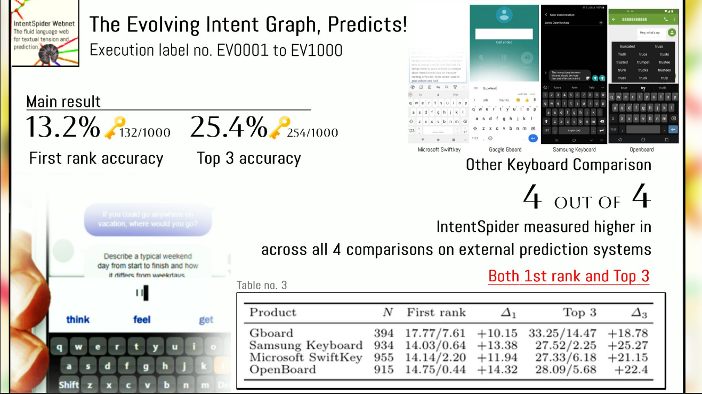

What's new

When You Are Unable to Remember the Exact Word, Suggestions Should Be Even More Personalized Than Before
I have been researching the predictive capabilities of modern n-gram-based predictive technologies, including both open-source and closed-source systems. During that research, I became deeply interested in a much larger opportunity for change and in the possibility of using IntentSpider with Huawei Celia Keyboard. Huawei documents Celia Keyboard as supporting predicted-word suggestions, voice input, smooth handwriting, more than 170 input languages, and gesture typing. That makes it a particularly interesting multi-input environment for research like this. There is also an important HCI lineage behind modern touchscreen text entry. Google HCI research scientist Shumin Zhai originated and led the SHARK/ShapeWriter work at IBM, together with Per Ola Kristensson, who is now Professor of Interactive Systems Engineering at the University of Cambridge. Kristensson co-founded ShapeWriter, Inc. in 2007 to commercialise the gesture-keyboard technology. ShapeWriter won a Google Android ADC50 developer award in 2008 and was acquired by Nuance Communications in 2010. Zhai joined Google in 2011. That history matters to me because it shows how fundamental HCI text-entry research can move from a research prototype into widely deployed input technology. What I mean for IntentSpider is that if a person remembers many details around a name but the actual name does not come to mind at that moment, the keyboard could use those already remembered word connections to support memory recall when they are useful for making the intended next-word prediction. That same personal memory could then continue to be useful when the person speaks through dictation or writes by hand with a stylus, instead of being useful only in one typing mode. If the user corrects a name once, I also want that correction to become useful in the other input methods where the same name is relevant. This is only one example. What if remembering enough information around something is already enough to find and express that word again?
What if remembering enough information around something is already enough to find and express that word again?
Making Context-Aware Decisions from Already Formed Connections
Let's take this as an example. You are writing, “Let us meet at that pizza place near the station, the one we visited after the conference.” In that case, you remember the place, you remember that it is a pizza place, and you remember the station and the conference, but the actual name of that place has disappeared from your mind at that moment. What I want is for those already remembered pieces to lead the system back to “RedApplo” while you are still writing, rather than requiring you to leave that conversation and search through old conversations or context.
One possibility for doing this is extending the personal graph with references to text that the user has actually chosen to include. Several existing parts of IntentSpider, including the fan dispersion algorithm and diffusion processes, already provide mechanisms that can be tested for this purpose. As mentioned before, the word “pizza” can provide one path, the word “station” can provide another path, and the conference can provide another one, while all of those separate paths can still arrive at the same personal place. A candidate can also retain the original phrase that supports it, because I think it is important for the system to preserve information about why a connection exists. If two different places satisfy the same remembered information, one more optional clue can be used to separate them. The system also needs to preserve the difference between a connection that is genuinely remembered from the user's information and a guess that the system is making, because those are not the same thing.
There is another possibility that I think is very important. Those paths should be able to cross languages as well. For example, a person may remember a description in Chinese, the relevant conversation may have happened in English, and the actual place name may be in Russian. Even though those expressions are in three different languages, they can still refer to the same personal meaning and often share many other properties. Large general NLP systems can address multilingual semantics, but at the micro scale required for a lightweight personal memory system, maintaining many interconnected personal graph structures and continuously updating relationships across languages can become computationally expensive. It may require a significant compute budget, and the cost per device or per user can become important. A lightweight local system therefore has a strong reason to keep these operations efficient and to avoid accidentally turning a simple operation into a much more expensive one. As I mentioned before, connecting all of these fragments to the same reference can make them useful together. A student could use this technology to recover a technical term from a medical textbook. An engineer could use the same idea to recover a component name. What I mean is that the words still available in a person's mind at that moment can become the path for finding the words that are currently missing.
Use Cases Involving Different Input and Output Methods
Now consider voice typing. You say, “We could go back to...” and in that case “RedApplo” can appear faintly beside the recognised text. You remember that this is the name, say it, and then continue the sentence. I do not want this to require another pause or another tap, because if the person has to stop the sentence to operate the memory system, that itself becomes another interruption. During handwriting, the same personal memory can also offer a continuation beside the recognised words. The main idea is simple. If something useful was already learned while the person was typing, I want that same thing to remain useful when that person starts speaking or writing by hand as well.
Huawei's existing voice and handwriting systems would continue to handle the actual speech recognition and handwriting recognition. IntentSpider can receive the text produced by those systems and then supply the relevant personal candidates. IntentSpider is an engine in the processing layer and does not need to depend on one specific recognition model. A host could use a basic speech-to-text engine or a newer closed-source voice model. IntentSpider can operate on the recognised text produced by either one. The recogniser's processing time still matters to total end-to-end user experience, but it is separate from IntentSpider's own prediction runtime. I would create a master control layer, which I call “Capcom”, to coordinate communication between IntentSpider and the relevant voice or handwriting model, including conflict and error handling. Capcom should decide whether a suggestion cue, such as a low-opacity suggestion state, is useful at that moment, how long it should remain, and when it should disappear. It should also prevent a prediction from remaining visible indefinitely and detect when the user deliberately ignores or rejects it. IntentSpider does not currently contain an explicit mechanism that distinguishes a rejected suggestion from an inaccurate prediction. A future integration could add a lightweight rejection and relevance signal, potentially using retrieval or vector similarity depending on the chosen design, and use that signal to adjust confidence for future display decisions. Simple tokenization and metadata gates could keep this layer lightweight instead of repeatedly passing unnecessarily complex objects through the system. This part matters because if a cue that is supposed to help someone continue a sentence starts distracting that person from the sentence, it is working against the purpose of the system. I see this as one of the next steps for taking the current IntentSpider keyboard research toward a commercially applicable product.
Making One Correction Useful in Other Places and Relating It to Other Prediction Events
This is another direction that could genuinely improve the capabilities of another model through a complete integration with IntentSpider Webnet. Imagine that an identifier or name is recognised incorrectly and the user corrects it once. I want to investigate whether that same correction can become available while typing, speaking, and handwriting instead of requiring the person to make the same correction repeatedly. This could be another logical process coordinated by the Capcom layer, but it would require a specialised mechanism that can detect repeated forms, retain the intended name, and preserve the relevant context around the correction. The user could have controls such as “Use this name for this project.” “Keep the old name for earlier work.” “Forget this connection.” These can become much more precise controls over personal memory. There is also a difficult boundary here. A correction for one project should not automatically change an unrelated project. A correction connected to one person should not be mixed with another person, and unrelated private conversations should remain unrelated. Carrying a correction between input methods is therefore only one part of the problem. Keeping the correct boundaries around that correction is another part. This could act as a context separator that changes the active context bucket. Because this also requires persistent state, IntentSpider is well equipped to explore this direction, but this feature is not currently available in IntentSpider.

The Current State of the IntentSpider Engine and Further Experimentation and Validation
The published C++ IntentSpider engine already builds and updates a personal word graph, and it separates context construction, ranking, suggestion display, and learning from the user's text. It can also save the graph state and load that state again. Another part that is particularly useful for this research is that the connection roles distinguish between an association retained in the graph and an association that actually transmits prediction influence. Because of that, there are already separate places in the current engine where I can change how a memory is reached, whether that memory should affect a candidate, and after that, whether that candidate should actually appear to the user.
In the experimental validation reported in the paper associated with the International Human Computer Interaction Conference 2026, IntentSpider produced 25.4% Top 3 exact target accuracy over 1,000 continuously updated events. That evaluation started from a recorded graph containing 40,096 observations. I also conducted a separate 50-event desktop measurement, where the median time from keyboard input through prediction and suggestion display was 2.4 milliseconds. I need to mention that these are starting measurements for the existing engine only, and they do not represent results for the proposed memory system described here. Please see the complete experiments and validation section in the paper. (final IHCI paper).
Runtime RedApplo Test
This run, which I nickname “Runtime RedApplo” because it contains the strongest personalised result in this runtime, contains 398 distinct stable suggestion states across 434.85 seconds and 8,768 source frames.
At 179.205 seconds in the recording, RedApplo appears as the rank 1 suggestion before RedApplo is typed. This matters because the result is not limited to a common function word. The original run records the engine surfacing a personal name inside a continuous interaction.
What matters to me in these selected moments is that the name RedApplo appears inside the actual suggestion row while text is being entered. That gives us a concrete starting point for the next experiment. Can the same kind of personal candidate become useful beside speech or handwriting as well? The two animations above show the interaction that I want to investigate.
Prediction event ledger  download
download
Video analysis notes  download
download
Recorded source moments
How IntentSpider Can Be Connected to Systems Such as Huawei Celia Keyboard
Huawei documents Celia Keyboard features including predicted-word suggestions, voice input, smooth handwriting, more than 170 input languages, and gesture typing. That means the underlying input systems already exist, which is a significant advantage at this stage. The opportunity I want to investigate is not recreating all of those systems. It is whether one personal memory component can be shared across those experiences so that useful personal information learned in one input method does not have to start from zero when the person uses another one. The proposed connection is that the host supplies text context and confirmed edits, Capcom coordinates the process, IntentSpider returns personal candidates, and Capcom decides whether and where to show a next-word cue. Only text that the human confirms should return to the learning path. That last part matters because showing a suggestion should not teach the system that the user actually said it.
Plans for the First Version
For the first version, an adapter can supply committed text to the IntentSpider engine and return candidates into another interface. Speech requires careful handling because the recognised transcript can change while the speech system is still deciding what was actually said. Temporary guesses should not become learned personal history as if the user had already confirmed those words. Richer memory recovery using several incomplete clues and multilingual connections can become a larger extension after this first connection is working. Unlike text entry on a graphical keyboard, voice recognition and dictation may benefit from showing suggestion cues only when confidence is sufficient or when the necessity gating process indicates that a cue is worth displaying. The necessity gate was designed to control whether ranked words should actually be shown, which is directly relevant to the concern described in the essay. IntentSpider should avoid influencing a person's expression by repeatedly showing poorly configured or low-confidence predictions. This becomes especially important when comparing a local personal system with approaches that curate context at large scale and then serve predictions back to devices.

I would start with a personal library of names in English, an opt-in local history, and an interface positioned beside the recognised text. First, I want to measure whether the existing prediction route actually helps a person continue when the exact name is not coming to mind. After that, I can add retrieval from incomplete clues and compare it with both the existing IntentSpider suggestions and a simple search through the person's own history. I want to measure whether the name was successfully recovered, how many interruptions occurred, whether the same corrections had to be repeated, and how many incorrect cues were shown. I also need to measure latency, memory use, and energy use on the target device.
For Huawei, I think the potential value is reducing the number of moments when a person has to stop expressing what they are trying to say only because one specific personal word or name is missing at that moment. The same personal learning could also become useful across several input experiences instead of one input mode only. We would need extensive testing, security review, and other checks before any product integration. A prototype made specifically for Huawei Celia Keyboard, or even an older version if API access were available and permitted, could also combine several third-party components. For example, it could use a voice model from provider A, a context separator from provider B, and a custom Capcom layer as the host that coordinates the complete system. High-level, non-confidential documentation of Huawei's internal architecture, even for a deprecated version, would make prototyping more accurate. A prototype could first show whether this value is genuinely present before the Huawei team commits to a much larger integration. Support from Huawei engineers would also accelerate the path from research to a production-quality system and would be extremely valuable.
I would be deeply grateful for a technical discussion about this first experiment. I can bring the existing IntentSpider engine demonstration and my International Human Computer Interaction conference presentation video, prepare the prototype, and then share the results. My email is nekshadesilva@gmail.com. An alternative contact route is the IntentSpider contact form at intentspider.nekshadesilva.com/contactform. The wider purpose and potential benefit of IntentSpider are much larger, but the first question I want to answer is very specific, even though it is technically complex. How can a local computer program help a person recover the word they intend without breaking the context of their thought and while staying within the context they have already provided? (click here to enter the playground, IHCI presentation, IntentSpider Engine Source Code)?